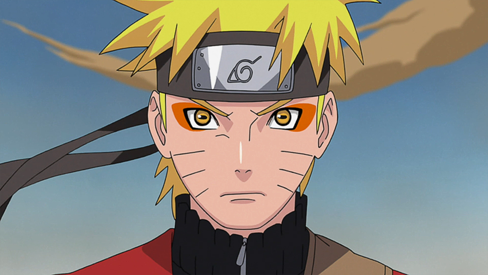
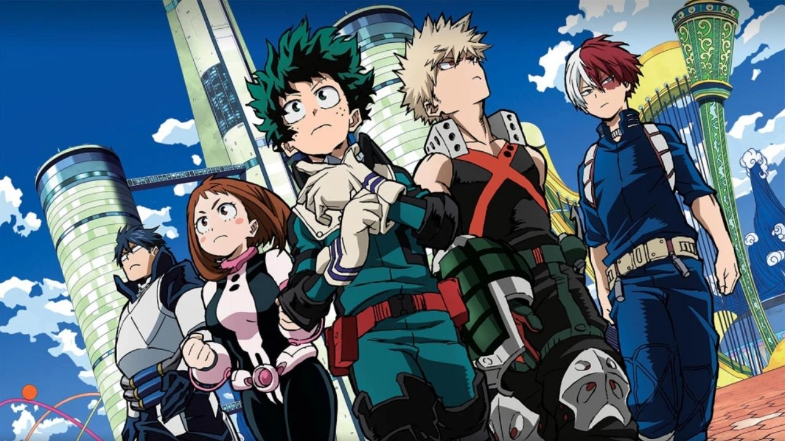
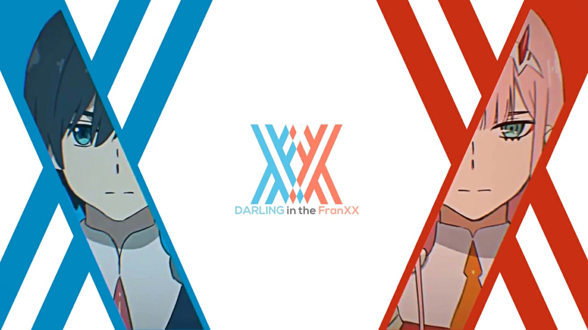
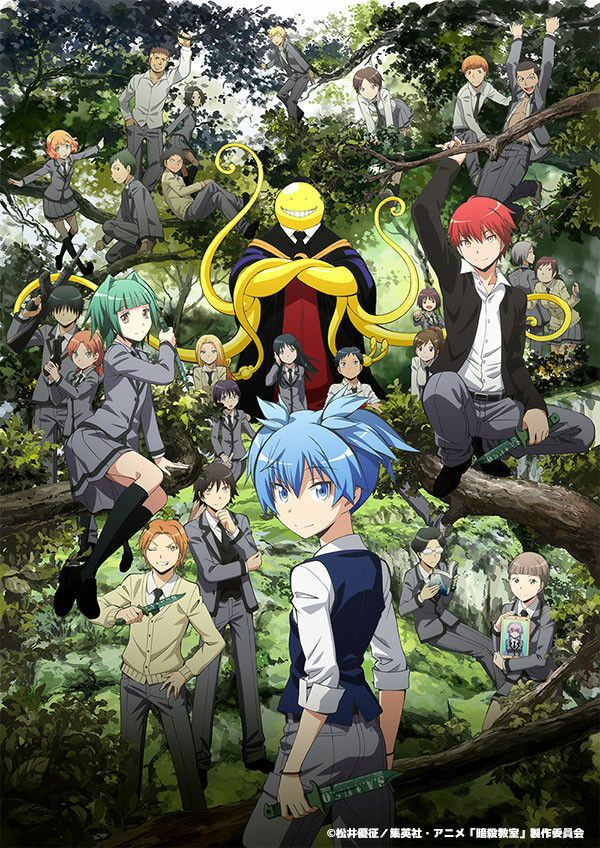
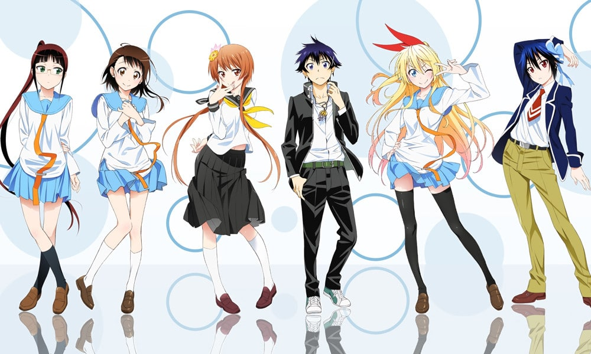
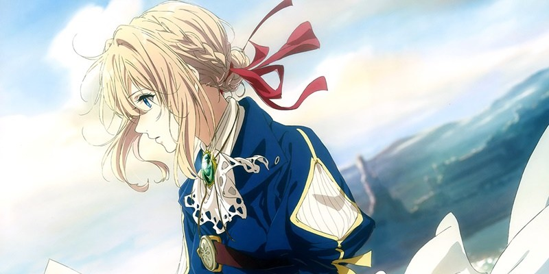

Contact


Anime adalah istilah animasi dari Jepang. Anime ini sangat populer dikalangan anak-anak hingga orang dewasa.
Berikut ini adalah rekomedasi untuk kalian yang ingin mencoba menonton anime.
1. Naruto
Siapa sih yang nggak tau dengan anime yang satu ini, anime ini sudah tayang di TV dari dulu bahkan mungkin emak-emak kita juga tahu.
Anime ini menceritakan tentang seorang anak yang bernama Naruto Uzumaki, ia adalah seorang shinobi. Semasa dia kecil, dia dijauhi oleh masyarakat di sekitarnya karena terdapat monster Ekor Sembilan yang tersegel di dalam tubuhnya. Karena itu dia bercita-cita untuk menjadi Hokage agar diakui oleh masyarakat di sekitarnya.
2. One Punch Man

Anime ini menceritakan seseorang yang bernama Saitama. Dia memiliki hobi yang unik yaitu menjadi pahlawan. Untuk mencapainya dia berlatih dengan sangat keras selama 3 tahun, dan setelah 3 tahun tersebut akhirnya Saitama menjadi sangat kuat dan tidak tertandingi. Tapi dalam prosesnya Saitama kehilangan semua rambutnya. Namun karena tidak ada orang yang mampu menandingi kekuatnnya, Saitama tidal lagi dapat menikmati serunya pertarungan dan menjadi sangat bosan. Akankah Saitama menemukan musuh yang mampu membuatnya terhibur.
3. Boku no Hero Academia
Anime ini pertama kali tayang pada 3 April 2016 dan sampai sekarang anime ini berlanjut sampai season 6, anime ini diadaptasi dari judul manga yang sama.
Anime ini bercerita tentang seorang bocah bernama Izuku Midoriya biasa dipanggil Deku yang lahir tanpa kekuatan super (Quirk) di dunia dimana kekuatan super adalah hal yang biasa. Meskipun demikian, Deku tidak menyerah dan memimpikan untuk menjadi seorang pahlawan. Setelah bertemu dengan All Might (seorang pahlawan terkuat), Deku belajar bahwa ia bisa mewarisi Quirk milik All Might dan memulai perjalan untuk menjadi pahlawan.
4. Darling In The Franxx
Anime ini rilis pada 13 Januari 2018 dengan berjumlah 24 episode. Anime ini bertemakan mecha, bergenre action, sci-fi dan dipadu dengan romance.
Anime ini bercerita tentang sekelompok pemuda yang dikenal sebagai "Parasite" yang harus bekerja sama dengan pilot mecha untuk melindungi dunia dari monster yang dikenal "Kalxosaur". Dalam proses ini, mereka harus mengatasi permasalahan pribadi dan berjuang untuk menemukan tujuan hidup mereka sambil belajar mengenal arti dari kata "Teman" dan "Cinta".
5. Koi To Uso

Anime ini rilis pada 4 Juli 2017 dengan berjumlah 12 episode dan 1 episode OVA. Anime ini bergenre romance. Dan diadaptasi dari judul manga yang sama.
Koi to Uso adalah sebuah anime romantis yang berpusat pada kisah cinta antara seorang remaja bernama Yukari Nejima dan seorang gadis bernama Misaki Takasaki. Dalam dunia mereka, pemerintah menentukan pasangan hidup mereka saat mereka berusia 16 tahun melalui sistem "Red String of Fate". Meskipun demikian, Nejima memiliki perasaan terhadap Takasaki dan harus memutuskan apakah dia akan mematuhi aturan pemerintah atau mempertahankan perasaannya untuk Takasaki.
6. Antsatsu Kyoushitsu
Anime ini rilis pada 10 Januari 2015. Anime ini bergenre action, comedy.
Anime ini bercerita tentang sekelas siswa SMA yang diberit tugas untuk membunuh guru mereka yang bernama Koro-sensei karena dianggpa membahayakan dunia. Namun, mereka mulai merasa bersalah setelah belajar lebih banyak tentang guru mereka dan mereke mencari cara untuk mengalahkannya tanpa membunuhnya.
7. Nisekoi
Anime ini rilis pada 11 Januari 2014. diadaptasi dari judul manga yang sama. Anime ini bergenre comedy romance.
Anime ini bercerita tentang seorang siswa SMA bernama Raku Ichijou yang merupakan putra dari keluarga Yakuza. Raku memiliki janji masa keci dengan seorang gadis. Namun ia juga harus berpura-pura berpacaran dengan Chitoge Kirisaki, putri dari sebuah keluarga Mafia, karena permintaan dari kedua keluarga tersebut. Dalam perjalanan kehidupannya, Raku mencoba menemukan siapa sebenarnya gadis yang bersama dia saat masih kecil. Anime ini akan menceritakan kisah cinta harem dari Raku Ichijou.
8. Violet Evergarden
Anime ini rilis pada 11 Januari 2018, dengan total 13 episode dan 2 movie. Anime ini diadaptasi dari Light Novel dan bergenre Drama, Fantasy. Anime ini salah satu anime denga tampilan yang sangat indah dan isi ceita yang sangat dalam.
Anime ini bercerita tentang seorang wanita bernama Violet Evergarden yang merupakan seorang veteran perang. Setelah perng berakhir, Violet harus beradaptasi dengan kehidupan setelah perang dan mencari arti kata "Cinta". Ia bergabung dengan sebuah perusaah layanan surat, dimana ia bekerja sebagi Auto Memory Doll yang membantu orang menulis surat. Dalam perjalanannya, Violet mulai memahami arti dari cinta dan membantu orang lain menyampaikan pesan perasaan mereka yang terdalam.
Mungkin sampai di sini saja. Itu tadi beberapa rekomendasi anime yang bisa kalian tonton, ada masih banyak lagi anime-anime yang seru dan menyenangkan.